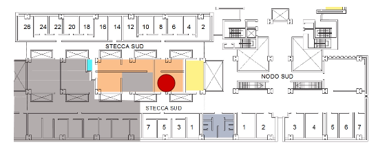

I'm Michael Soprano
PhD Student @ University Of Udine
- Born 17 December 1992
- Address Via Mulin Vecjo 4
- CAP 33010
- City Chiusaforte (UD)
- Region Friuli-Venezia Giulia
- Country Italy
-
Orcid
 orcid.org/0000-0002-7337-7592
orcid.org/0000-0002-7337-7592
Hello! I am Michael Soprano. Currently, i am working as a PhD Student at the University of Udine. I have worked there also as a Research Fellow. I got my Master Degree in Computer Science on 15th March 2018 and my Bachelor Degree in Multimedia and Web Technologies on 19th March 2015. I wish to make the most of my skills in Computer Science to carry out research in this field and leave a small trace in the scientific world.
Professional Skills
Work Experience
University of Udine
Udine
PhD Student
PhD course in Computer Science, Mathematics and Physics, 35th cycle.
University of Udine
Udine
Research Fellow
Research project funded by SISSA Medialab dedicated to the study (definition, design, implementation and evaluation) of Readersourcing 2.0, an ecosystem providing an implementation of an approach called Readersourcing, which is proposed as an alternative to the standard peer review activity that aims to exploit the otherwise lost opinions of readers. The general objective is to verify the effectiveness of crowdsourcing for quality measurement in scholarly publishing.
Datamantix S.r.l.
Udine
Full Stack Web Developer
Design, development and maintenance of various kinds of web applications and chatbots.
Archeido S.r.l.
Udine
Full Stack Web Developer
Development of a web application.
Troublezine
Udine
Full Stack Web Developer
Design, development and maintenance of a web application.
Publications
| Title | Authors | Venue | Kind | Year | URL |
|---|---|---|---|---|---|
| New! The COVID-19 Infodemic: Can the Crowd Judge Recent Misinformation Objectively? | Roitero Kevin, Soprano Michael, Portelli Beatrice, Spina Damiano, Della Mea Vincenzo, Serra Giuseppe, Mizzaro Stefano, Demartini Gianluca |
Proceedings of the 29th ACM International Conference on Information and Knowledge Management (CIKM2020). Galway, Ireland (Online). October 19-23, 2020. Conference Rank: A |
Conference Paper | 2020 | TO APPEAR |
| New! Can The Crowd Identify Misinformation Objectively? The Effects of Judgment Scale and Assessor's Background | Roitero Kevin, Soprano Michael, Fan Shaoyang, Spina Damiano, Mizzaro Stefano and Demartini Gianluca |
Proceedings of the 43st International ACM SIGIR Conference on Research and Development in Information Retrieval (SIGIR 2020). Xi’an, China (Online). July 25-30, 2020. Conference Rank: A* |
Conference Paper | 2020 | VISIT |
| Bias and Fairness in Effectiveness Evaluation by Means of Network Analysis and Mixture Models | Roitero Kevin, Soprano Michael and Mizzaro Stefano |
10th Italian Information Retrieval Workshop (IIR 2019). Padova, Italy, September 2019. |
Conference Paper | 2019 | VISIT |
| HITS Hits Readersourcing: Validating Peer Review Alternatives Using Network Analysis | Soprano Michael, Roitero Kevin and Mizzaro Stefano |
4th Joint Workshop on Bibliometric-enhanced Information Retrieval and Natural Language Processing
for Digital Libraries (BIRNDL 2019) at the 42nd International ACM SIGIR Conference on Research and
Development in Information Retrieval. Paris, France, July 2019. ACM. |
Conference Paper | 2019 | VISIT |
| Crowdsourcing Peer Review: As We May Do | Soprano Michael and Mizzaro Stefano |
In Paolo Manghi, Leonardo Candela, and Gianmaria Silvello, editors, Digital Libraries:
Supporting Open Science, pages 259–273, Cham, 2019. Springer International Publishing. |
Conference Paper | 2019 | VISIT |
| Crowdsourcing Peer Review in the Digital Humanities? | Soprano Michael and Mizzaro Stefano |
8th AIUCD Conference 2019 – Pedagogy, Teaching, and Research in the Age of Digital Humanities, pages 259–273. Udine, Italy, 2019. |
Conference Paper | 2019 | VISIT |
| Reproduce and Improve: An Evolutionary Approach to Select a Few Good Topics for Information Retrieval Evaluation | Roitero Kevin, Soprano Michael, Brunello Andrea and Mizzaro Stefano | ACM Journal of Data and Information Quality - Special Issue on Reproducibility in IR: Evaluation Campaigns, Collections and Analyses (JDIQ), 10(3):12:1–12:21, September 2018. | Journal Paper | 2018 | VISIT |
| Effectiveness Evaluation with a Subset of Topics: A Practical Approach | Roitero Kevin, Soprano Michael and Mizzaro Stefano |
Proceedings of the 41st International ACM SIGIR Conference on Research and Development in Information Retrieval (SIGIR 2018). Ann Arbor Michigan, U.S.A, July 8-12, 2018. Conference Rank: A* |
Conference Paper | 2018 | VISIT |
Education
University of Udine
Udine
Master Degree, 109
Computer Science
The Master Degree Course in Computer Science aims at building up the theoretical and methodological bases acquired during the three-year undergraduate Degree in Computer Science, and technical knowledge, so as to prepare graduates to access jobs of technical or managerial responsibility. The advanced technical skills acquired include particularly updated computing disciplines required by the national and international labor market, such as Computer Security, Computer and Network Architecture, Use of Artificial Intelligence systems for the creation, use and management of systems, Workflow and Data Warehouse Systems, Interactive Systems, Computational Linguistics and its Applications.
University of Udine
Udine
Bachelor Degree, 101
Web Technologies and Multimedia
The Multimedia and Web Technology Course provides the knowledge and skills to work in planning, developing, managing and maintaining Internet and multimedia applications, for firms, publishing companies, marketing and advertising agencies, public and private companies, administrations and laboratories which make significant use of Web and multimedia systems. The technical skills acquired include multidisciplinary subjects such as E-commerce, Website and Portal Design, Communication Psychology, Applied Statistics and XLM-based technologies.
I.S.I.S. Raimondo D’Aronco
Gemona del Friuli
High School Diploma, 77
Head Technician Industrial Expert
Computer Science Specialization
Side Projects
ClickDay Training
Full Stack Web Developer
Design, development and maintenance of ClickDay Training, a platform that allows the users to train for a particular task which is related to the events that are shown on the platform itself. It has been made with Yii2, that is a MVC framework written in PHP, and an external responsive template based on Bootstrap, modified and integrated into the structure of Yii2 by myself.
Troublezine
Full Stack Web Developer
Design and development of the new version of Troublezine, blog with various genders of articles dedicated to music. It has been made with Yii2, that is a MVC framework written in PHP, and an external responsive template based on Bootstrap, modified and integrated into the structure of Yii2 by myself.
Val Resia Vertical
Full Stack Web Developer
Design and development of Val Resia Vertical, a website dedicated to a running event in Friuli-Venezia Giulia, Italy. It has been made with Yii2, that is a MVC framework written in PHP, and an external responsive template based on Bootstrap, modified and integrated into the structure of Yii2 by myself.
Contact Me
Feel free to write me a message
- Company University of Udine
- Address Department of Mathematics, Computer Science and Physics, Via delle Scienze 206, Udine (UD), Italy
- Office Rizzi Building, 2° Floor, South Node, Lab SMDC (LC2-04-DE) 